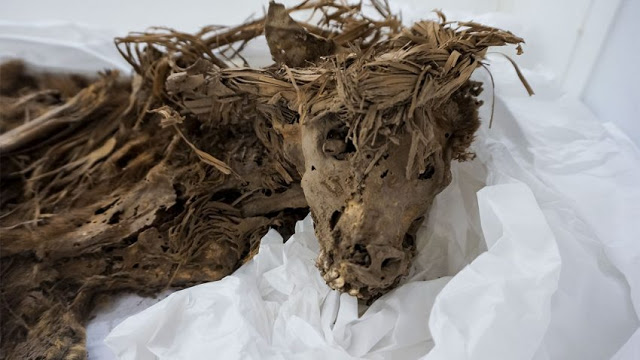

Digging underneath the Parque de las Leyendas zoo, Karina Venegas Gutiérrez and her colleagues in the Division of Archaeology at the Parque de las Leyendas, unearthed 128 pre-Colombian dog skeletons buried alongside 126 pre-Colombian human skeletons! The finding of these dogs, buried together with a similar number of humans, is indicative of the important relationship that dogs have had with the people of Peru.
Gutiérrez, and her team of Archaeologists, chose to make their information on this find public, and it has been documented on many digital platforms. Information on their findings can be publicly accessed in various online journals, newspapers, blogs and youtube channels which have been shared plenty of times through the various social media platforms such as on Facebook, Twitter and Instagram. Through these portals, archaeologists and non-archaeologists alike can read the information and view the photos and videos of the dogs remains. Many people believe that these findings can provide great insight into the roles of dogs to those living (and dying) in pre-Colombian Peru. This find is incredibly interesting and it's wonderful that it has been made available and easily accesible to both academics and the general public. I believe we all have a right to view and interpret information that has been discovered, especially that which pertains to our past and our ancestors. We can continue to learn a great deal about ourselves from our past and it is important to see the continuation or difference in past beliefs of former societies. These remains are now located at the Middendorf Museum and can be seen in person, or can be accessed online, watch here to see some of the collection!
Descending from the common street dogs, that are still found roaming the streets today, they found canine skeletons ranging from small to quite large. One finding in particular that made my heart twinge, was a dog skeleton showing a distinct under-bite, suggesting a relation to a bulldog (I have a French-Bulldog mix, which you can see in the “about me” section). Positioned to look as though asleep, the dogs were all wrapped up in burial textiles, just as the humans. The remains were so well preserved, some still had skin and hair and even a few still had their ears and noses. Radiocarbon dating has not been done yet, however, some objects located in the assemblage suggest a date of around 1000 C.E. Ancient dog cemeteries have been found in Peru, however, this is different considering the human remains, found alongside the dogs, all appear to have been buried at approximately the same time and in a random ordering. Skull fractures and broken bones show signs of violence done to the humans, whereas the dogs have no such signs of abuse. One hypothesis detailed in Science Mag states that Gutiérrez speculates “that the dogs were part of a ritual sacrifice, perhaps carried out hastily after a traumatic event in the community. “Maybe the dogs were offered to the humans after a mass death of some kind,” she said. As for who may have killed these people and why, she still can’t say.” 